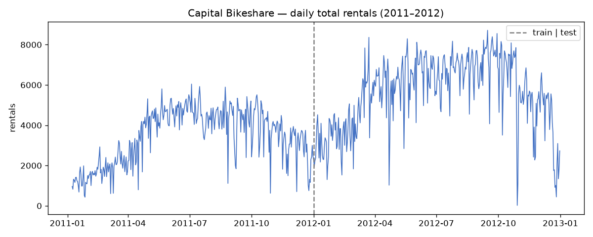
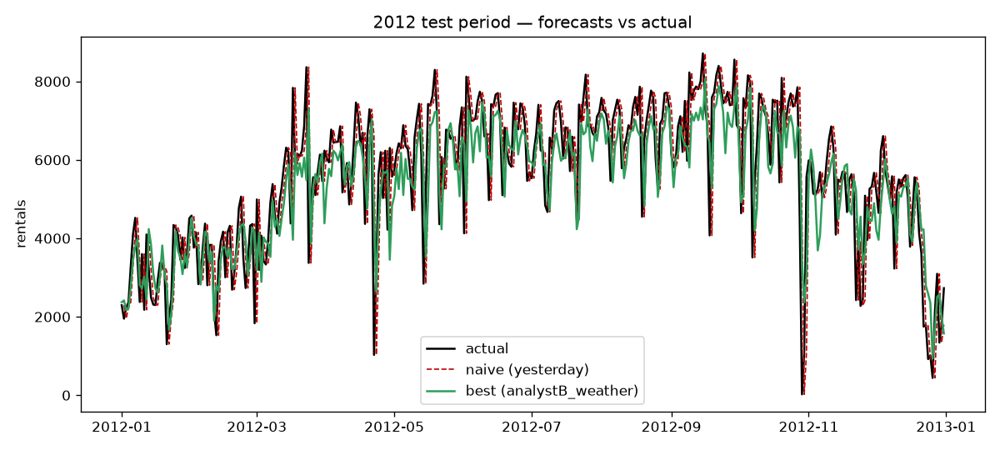
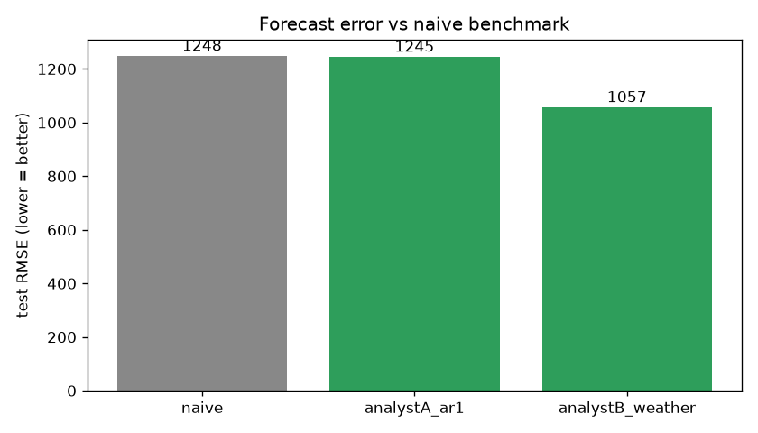

Every evening the operations team needs an estimate of tomorrow's total rentals to plan staffing and fleet capacity. An estimate that is too low leaves the team unprepared for a busy day; too high raises unnecessary operating costs. Only information available that evening may be used, and the model is compared against a simple naive rule: tomorrow = yesterday.
casual and registered — their sum is exactly the target cnt.lag1 (yesterday's rentals, known that evening), lag7 (same day last week), weathersit (weather situation).mlflow.log_params / log_metrics / set_tag / log_input; the best model is registered as a named version BikeShareForecaster (currently v2) via mlflow.register_model.The local tracking store is sqlite:///mlflow.db, under experiment CapitalBikeshare. Parameters, metrics and tags for both runs are persisted, and the best model is registered in the Model Registry. To explore locally:
python src/train.py # run experiments and log to MLflow mlflow ui # open http://127.0.0.1:5000 to browse runs & registered models
analystA_ar1 and analystB_weather — compare RMSE, features and hyper-parameters side by side.BikeShareForecaster has named versions v1 and v2 — retrievable and reproducible.| Run | Features | RMSE | MAE | R² | vs naive |
|---|---|---|---|---|---|
| naive (baseline) | — | 1248.0 | 872.0 | — | — |
| analystA_ar1 | lag1 | 1244.6 | 965.4 | 0.514 | +0.3% |
| analystB_weather ★ | lag1, lag7, weathersit | 1056.6 | 802.8 | 0.650 | +15.3% |
Conclusion: Analyst A only ties the naive baseline (+0.3%, not worth adopting); Analyst B clearly beats the baseline (−15.3%) and is registered as BikeShareForecaster v2 for operations planning.



pip install -r requirements.txt python src/train.py mlflow ui # browse http://127.0.0.1:5000
Artifacts: mlflow.db + mlruns/ (per-run parameters, metrics and model artifacts) and the registered model BikeShareForecaster.
git init git add . git commit -m "bikeshare forecast report" git branch -M main git remote add origin git@github.com:<username>/<repo>.git git push -u origin main
Then in the repo's Settings → Pages, set Source to the main branch and /docs folder. The site is live at https://<username>.github.io/<repo>/.